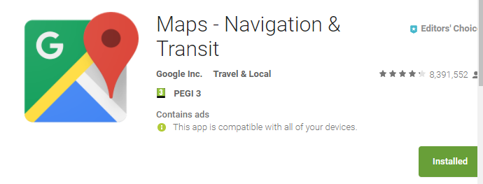
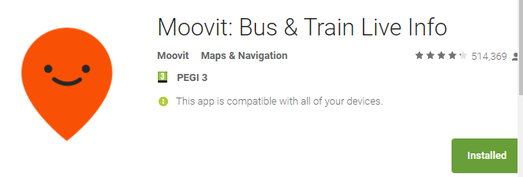

Welcome to Israel
International Students guide book to Haifa university and dorms
Before coming to Israel
Does dates of my flight tickets matter?
Yes. Carefull while booking the dates of the flight tickets. In Israel, public transportation on the weekends and on holidays(see public transportation chapter). You should avoid coming or leaving on Friday and Saturday and also check there is no holiday on this date. Otherwise, you we be stuck with no cheap way to come from the airport to Haifa's dorms
Where should i go when i land in Ben Gurion airport?
You should get on a train from Natbag(Ben Gurion airport) to "Hof ha'Carmel central station" and from there to Haifa University(the dorms are on the edge of the University). The drive should take around 2 hours (1:15 on the train).
Show map?

Public transportation
Rav-Kav
In Israel we use "Rav-Kav". A card that you can charge with money and use it on the buses and trains.It is very recommended to get one on each one of the central bus station. It allows free reuse in the time frame of 90 mins. In order to get a 33% discount, first get a paper that states you are a student (ask the Int' school to give you) and then go with it to do your Rav-Kav card

Buses
Egged Israel TransportHEADS UP: a bus got a Number and final destination written on it. A repeating mistake is to go on a bus just by it's number. Some lines, like 146, pass in the university for both directions!. This happens because both buses diverge from their route to go in the university, pick up passengers and go back to their route. If you are not sure, ask the driver if he reaches your destination.
We pay on buses drives by areas. In Haifa, you can go on the bus without stating your destination, It's the same price, around 6 shekels. If you from Haifa to a city near by, state it to the driver and he will charge you accordingly.
The closest station to the dorms is "University/Multi-Purpose" and NOT "University/Eshkol Tower". See campus map
- 37- starts/finish at "University/Multi-Purpose"(works also on Saturday) - Horev center, Merkaz Carmel, Down town
- 24- starts/finish at "University/Multi-Purpose" - Horev center, Down town, Hof ha'Carmel central station (careful, to Hof ha'Carmel take bus 146. bus 24 takes much more time).
- 146- starts at Merkazit HaMifrats central station to Hof ha'Carmel central station - Horev center, Haifa mall, Hof ha'Carmel station, Beach
- 146- starts at Hof ha'Carmel central station to Merkazit HaMifrats central station - Cinamall - Lev HaMifrats mall
- 137- starts/finish at "University/Multi-Purpose" - Grand Canyon mall
Trains
Israel RailwaysThe 2 closest train stations are Hof ha'Carmel central station and Merkazit HaMifrats central station. You can buy tickets using your Rav-Kav.
Applications
It's recommended to use "Moovit" or Google maps Applications. Most times, there is a live feed on when then bus will arrive
 Getting around
Campus
Haifa's University
- The Dorms - see Dorms chapter map
- University/Multi-Purpose station
- The direction to Osafiya and Dalyat Al Carmel
- You can go shopping and eat there. Take bus 37A (NOT 37)
- On a walk distance (5mins), you can go to the park (little Switzerland).Amaizing place. To gate back(the gate is closed at 10pm), there is a Carousel gate close to the square. Press the button and the dorm guard will buzz you in
- Multi-Purpose building
- Coffix- coffee and food - low prices
- Student building - you will be studying there
- Terras and Rabin building
- Gym on floor 0 (low price to enroll)
- Pilpelet on floor 3 - food place - low prices
- Aroma on floor 6 - food place - high prices but very good food
- Greg on floor 7(outside) - food place
- main/Eshkol building. Got 3 floors: the 500, 600, 700.
(Greg is the 600, the library is the 700)
- 500- Mini Market and some food places. Belongs to the student union so prices are low to medium
- 600- Hecht Museum and Auditorium
- 600- Main university food court - Shawarma, salad stand, Chinese, home food...
- 600- Akademon - school and home supplies store
- 700- library and entrance/exit to the Eshkol bus station
- 8- The direction to Haifa
Dorms
Haifa's dorms
- Guarded entry/exit: open from 8am to 8pm (going from the dorms to the university 24/7 - Carousel gate)
- Guarded entry/exit: open 24/7.
- University/Multi-Purpose station
- the dorms boardwalk
- Mini Market, Public bathroom, Dorms Club(has a pub in it)
- Financial office
- Dorms main management office
- The 100-800 number are the blocks. The first number of you apartment is the block (343 is block 300)
- ***In case of a malfunction in your room, open a malfunction form on the dorms site
- ***In case of a problem, call the Dorms guard station: 048240370
Haifa
haifaEdited.jpg
- Haifa University
- Horev Center(many lines)
- Haifa mall(146 to Hof haCarmel)
- Hof ha'Carmel central station and Nice beaches(146 to Hof haCarmel)
- Carmel center(many lines)
- Grand canyon(137)
- The Baha'i Gardens
- Down town(37 and more)
- Merkazit HaMifrats central station(146 to Merkazit HaMifrats)
Miscellaneous
Phone sim card
Try the Akademon store on the 600 floor i the main building. Last year(2017) "019" had a deal - buy a sim card and pay each month in advanced about 50 shekels and get unlimited calls and sms and something like 5GB. Its a good deal.
Free Wifi on campus
On the dorms, each apartment has a modem inside of it(or a lan connection) and the price is included in your rent fee. The internet isn't the best but we can work with it
Eduram network: good signal on campus (less on the dorms). Im not sure you get a Username, but if you do than you connect to it as so: Username is yourID@haifa.ac.il and the pass is to your campus account.
Aircarmel network: ok signal on the dorms boardwalk and good on campus. Ask the International school to supply a password and user name
On both Eduram and Aircarmel, you can ask a local student to connect with his Username and pass :)
Last update: 30/9/2017
Please send feedback to giladeini@gmail.com
Why is your feedback important?
This web page was done just to see if will help international
students.
If it will get feedbacks, we will try to improve
the web page.